De Vervallen Toren
Een lange dagmars van Stonetop rijst een brede, lage heuvel op uit de Vlakte De Vlakte.
Boven op die heuvel ligt een hoop aarde en steen. Metalen spitsen steken eruit omhoog en doorboren de hemel. Wie zijn ogen tot spleetjes knijpt, ziet het puin voor wat het is: een gebroken toren, ooit van grootse afmetingen, lang geleden geveld.
Iedereen uit Stonetop kent de Vervallen Toren (The Ruined Tower) en de reusachtige tunnels eronder. Avontuurlijke types denken er weleens aan ze te verkennen. Meestal schrikken ze en komen ze niet ver.
Maar wie dieper is afgedaald, kwam terug met wonderbaarlijke dingen. Of kwam helemaal nooit terug.
De toren van Stormvanger
Voordat de toren viel, woonde hier Stormvanger (Stormcatcher), de laatste (?) van de Stormheren Stormheren. De toren was als de mast van een machtig schip: hij ving wind en bliksem en hield hun kracht vast in de Stormbol Scherven van de Stormbol, die haar vele toverkunsten voedde.
Eeuwenlang stond Stormvangers toren tussen de rijken van de andere Makers De Makers. Zij dreven handel met haar en zochten haar raad of hulp. Maar hoewel de Wegen van de Makers De Wegen van de Makers tot aan haar poort liepen, stond zij los van hen allen.
Toch leefde ze niet alleen. Rond haar toren groeide een bruisende gemeenschap. Arbeiders, ambachtslieden en geleerden. Boeren en huispersoneel. Zelfs soldaten. Generaties families. Vluchtelingen op zoek naar een nieuw thuis.
Gezanten en verschoppelingen van de andere
Makers. Zoekers, buitenbeentjes en schipbreukelingen uit verre landen.
Toen de Tijd van het Cataclysme kwam – toen de slaven van de Steenheren Steenheren in opstand kwamen en de Dingen Beneden De Dingen Beneden loslieten, toen de leerlingen van de Rijpheren Rijpheren verwilderden, toen de steden van de Smidseheren Smidseheren onder as en oorlog werden begraven – hield Stormvangers toren stand. Een bolwerk van beschaving.
Een eiland van veiligheid. Een toevluchtsoord.
Het kon niet blijven duren. Cultisten van Og'molok, de Gezichtloze Horde Og'molok, de Gezichtloze Horde, overspoelden de borstweringen en dreven de verdedigers terug.
Og'molok zelf barstte van onderen los als een golf van krioelende gruwelen.
Stormvanger ontketende een machtige spreuk die de aanvallers in glas veranderde. Maar diezelfde spreuk deed de Stormbol barsten. Ze verwoestte de toren en brak een stuk van de Wegen van de Makers. Ze werd Stormvangers ondergang.
Veel bewoners van de toren vluchtten door een portaal Oermachten onder de toren. Maar de meesten werden afgeslacht door de aanvallers, of samen met hen verglaasd, of gegrepen door de explosie van de Stormbol. Een handjevol overlevenden bleef achter en probeerde opnieuw op te bouwen, maar zij vielen al snel ten prooi aan de gruwelen die nu over de wereld waren losgelaten.
In de eeuwen sindsdien hebben velen geprobeerd de ruïne op te eisen, of haar schatten en geheimen te plunderen. Maar allen faalden, om de een of andere reden.
En de Vervallen Toren blijft.
Overlevering
Iedereen uit Stonetop weet:
- Waar de toren staat
- Van de reusachtige tunnels eronder
- Dat een paar dappere (dwaze) lieden ze hebben verkend en er vreselijke en wonderbaarlijke dingen hebben gevonden
Sommigen weten misschien:
- Een verhaal of twee over lieden die hier op verkenning gingen en wat ze vonden
- Bijzonderheden over de ruïnes boven de grond, of over enkele van de bovenste tunnels
- Dat de toren een ruïne van de Stormheren is
- Dat het de laatste vesting van de Makers was die viel
- Dat er overal op de Vlakte stukken van de toren te vinden zijn
- Dat de buitenste ruïnes, de toren zelf en de bovenste tunnels allemaal zwaar geplunderd zijn, maar nog af en toe een snuisterij opleveren
Heel weinigen weten:
- Het verhaal van Stormvanger
- Hoe zij tegenover de andere Makers stond
- Hoe de toren precies viel
- Betrouwbare bijzonderheden over de diepten
- Wat dan ook over Og'molok, de Gezichtloze Horde
Vragen
- Wie van jullie heeft zich al eens in deze ruïnes gewaagd? Wat hield je tegen om ver te gaan?
- Welke wonderbaarlijke snuisterij in Stonetop zou hiervandaan komen? Wie heeft die nu, en waarvoor gebruikt die het?
- Welk wonder zou er onder de Vervallen Toren liggen? Van wie hoorde je zulke verhalen?
- Wanneer de nachtmerries komen en je droomt van de val van de toren, ben je dan een van de gedoemde verdedigers? Of hoor je bij de kwijlende horde?
de toren zelf
Haakjes
- Bandieten hokken in de ruïnes en vinden een artefact dat hen extra gevaarlijk maakt.
- Een tovenares voedt haar demonische kind op in de diepten van de toren.
- Een dronken zwerver beweert de diepten te hebben verkend, maar zijn vrienden kwamen er niet uit.
- Een geleerde uit het zuiden wil de toren in afdalen en zoekt hulp van plaatselijke mensen.
- Telkens terugkerende aardbevingen vallen samen met vreselijke nachtmerries, vooral bij wie door geweld is getekend. In de nachtmerries komen de toren, zijn val of de tunnels eronder voor.
Er komen
Om er vanuit Stonetop te komen, volg je de Westweg 3-4 uur tot het Kruispunt De Wegen van de Makers. Vandaar is het 5-6 uur naar het zuidwesten over de Vlakte De Vlakte.
Gebieden
- Overwoekerde wal, zo'n 4,5-6 m hoog, die op ~1,2 km afstand om de toren heen loopt. Er steken enorme behouwen stenen uit, vergelijkbaar met die van de Oude Muur Het dorp Stonetop.
- Buitenste ruïnes tussen de wal en de toren. Ooit een bloeiende stad, nu nog slechts een warboel van ruïnes, grotendeels opgeslokt door de prairie.
- Een ondiepe krater, die zich ~120 m uitstrekt vanaf de noordoostrand van de toren. Gras/aarde/ modder/stilstaand water bedekken glazig, slakachtig gesteente.
- De toren zelf: ~90 m in doorsnee. Het noordoostelijke derde deel is grotendeels puin, maar in het zuiden en westen staan nog een paar verdiepingen, met muren van ~60 m hoog.
- De bovenste tunnels beginnen ~30 m onder het oppervlak. Zwaar geplunderd, flink spookachtig, grotendeels onderhouden door een spectrale Smidseheer en zijn samengeraapte constructen samengeraapt construct.
- De diepten liggen nog verder omlaag, een doolhof van kamers, zalen, trappen, schachten en holen, alle in uiteenlopende staat van onderhoud. Vol infrastructuur, artefacten, experimenten, kerkers en verglaasde gruwelen.
Boven de grond
De Vervallen Toren staat op een brede, lage, licht beboste heuvel. Van een afstand is hij slechts een herkenningspunt. Wie dichterbij komt, ziet pas hoe gigantisch de toren ooit was.
Indrukken
Overal
- Zuidelijke wind, die altijd waait
- Piepen en krijsen van metalen spitsen wanneer de wind aanwakkert
- Metalig geblaf en getjilp van hoog boven, het knappen van een metalen kabel
- De dreigende omvang van het ding, groot als het landschap, moeilijk te bevatten
- Geur van ozon, zelfs op een heldere dag
- Een fluitend gekweel; een spottende lach, een flits van felblauwe veren
Buitenste ruïnes
- Hopen aarde verspreid over het land, met plukken gras en struikgewas erop
- Het oneffen, ruige terrein, waardoor je nooit je ritme vindt
- Af en toe stukjes gebroken aardewerk of metaal, eeuwenoud, die daar gewoon liggen, uit de grond omhooggewoeld
In een gebouw of in de toren
- Grotachtige duisternis, koelte en stilte zodra ze naar binnen stappen
- Verbleekte mozaïeken/beeldhouwwerk, aangetast door tijd, vandalisme, erosie, korstmos
- Zwakke zonnestralen, vol zwevend stof
- Wind die fluitend door kieren in muren/plafonds naar binnen komt; water dat door diezelfde kieren drupt als het regent
Terrein
Kies er 1 of combineer er 2, of laat iemand de Lotsdobbelsteen () werpen.
| 1 | Kaal stuk zand/stof/glas |
|---|---|
| 2 | Modder/stilstaand water/diepe sneeuw |
| 3 | Greppel, geul of talud; de omtrek van begraven ruïnes |
| 4 | Blootliggende muur/muren, afbrokkelend en bedekt met mos/korstmos |
| 5-6 | Strook gras, voet (zo'n 1-2,5 m) hoog |
| 7 | Struiken, kreupelhout, boom/bomen – misschien zelfs doolbomen |
| 8 | Enorme stenen plaat, deels begraven; een neergestort stuk van de toren |
| 9-10 | Hoop aarde/steen met een kuil ernaast; een opgraving of hol |
| 11-12 | gebouw (zie hieronder), op zijn minst enigszins intact |
| 1-8 | Van vóór de val van de toren; kies of werp voor het doel ervan |
|---|---|
| 9-11 | Gebouwd na de val van de toren; kies of werp voor het doel ervan |
| 12 | Een grafheuvel (Grafheuvelbouwers, werp voor de grootte) |
| 1-2 | Woning/kazerne/leefruimte |
|---|---|
| 3-4 | Keuken/wasruimte/badhuis/latrine |
| 5-6 | Bijeenkomsten/vergaderingen/openbaar leven |
| 7-8 | Opslag/kelder/stal/graftombe |
| 9-10 | Werk/productie/schepping |
| 11-12 | Esoterie/experimenten |
De toren zelf
De voet van de toren is ~90 m in doorsnee; puin en opgehoopte aarde liggen nog verder uitgespreid. Het zuidelijke en westelijke deel staan nog overeind en rijzen ~60 m boven de heuveltop uit.
Spitsen: Vier metalen spitsen stutten de muren van de toren, één op elke windrichting:
massief, verroest, reikend naar de hemel.
De zuidelijke en westelijke spits steken elk nog zo'n 60 m boven de muren uit (~120 m hoog in totaal). Aan de top van de zuidelijke spits bungelt een stuk kabel.
Puin: Het noordoostelijke derde deel van de toren is enkel puin, dikke muren en aarde, opgestapeld
tot ~9 m hoog, begroeid met gras en struiken.
Het puin is doorzeefd met greppels, kuilen, oude opgravingen, bedolven kamers en holen.
Begane grond: Het zuidelijke en westelijke derde deel van de toren is op grondniveau intact, met enorme overwelfde zalen (plafonds van ~12 m), waaronder:
- Een salon met hoge, smalle ramen. Gestileerde friezen (verbleekt, beklad, vol vogelnesten) tonen taferelen uit het rijk van de Stormheren Stormheren.
- De baden, een diep bassin vol smerig, stilstaand water. De muren zijn opengebroken, de leidingen geplunderd.
- De grote zaal, grotendeels intact, met een reusachtige stenen tafel. Het plafond is betoverd en toont de nachtelijke hemel.
Dienstgangen en -kamers op mensenmaat lopen parallel aan de grotere zalen en gangen.
Inlegwerk: De kamers in de toren hadden ooit inlegwerk van aetherium Onder de grond langs al hun muren en plafonds, maar dat is lang geleden weggegutst door plunderaars en donderdraken De Vlakte.
Centrale trappenhuis: Een ronde schacht in het hart van de toren, 9 m breed. Loopt omhoog tot de eerste verdieping en ~30 m omlaag tot de bovenste tunnels.
Trappen op mensenmaat wentelen langs de buitenwand, veel te klein voor Makers. Konden zij vliegen?
Bovenverdiepingen: De eerste verdieping ligt ~15 m hoog en staat deels open naar de hemel; ze beslaat de zuidwestelijke helft van de toren. Bereikbaar via het trappenhuis, gaten in plafonds of door langs de buitenmuren te klimmen. Er zijn nog een paar intacte kamers, waar blauwe eksters gevaren glimmende dingetjes verstoppen en ingewikkelde mozaïeken leggen.
De tweede en derde verdieping liggen elk nog eens 12 m hoger en zijn alleen bereikbaar via lastige klimpartijen.
Instabiel, met maar een paar “kamers”, die allemaal op zijn minst deels in de open lucht liggen.
Overal eksternesten.
Kamers bedenken
Kies of werp voor elke specifieke kamer die je vastlegt een doel (vorige pagina) en combineer dat met een thema van de Stormheren.
Stel je de kamer voor zoals die vóór de val was. Hoe werd ze getroffen door de aanval? Door de explosie van de Stormbol? Door eeuwen van plundering, vandalisme, verwering en verwaarlozing? Wie of wat heeft hier sindsdien gewoond?
Welke details vertellen dit verhaal nog?
Welke ontdekkingen ontdekkingen wachten erop gevonden te worden?
Ontdekkingen
Kies er voor elk hiervan 1 of laat iemand de Lotsdobbelsteen werpen.
| 1 | Verandering van terrein en werp opnieuw |
|---|---|
| 2 | Een kans op inzicht in een dreiging of gevaar (sporen die aantallen, verblijfplaatsen enz. verraden) |
| 3 | overblijfselen van het verleden (zie hieronder) |
| 4 | Een ontmoeting (volgende kolom) |
| 5 | Nuttige of waardevolle flora, groeiend tussen de ruïnes |
| 6 | Iets waardevols (volgende kolom) |
| 1 | Blootliggend metselwerk, getekend door rampzalig geweld (gesmolten, verbrijzeld enz.) |
|---|---|
| 2 | Stukjes oud dagelijks leven (potten, gereedschap, keukengerei enz.), waarschijnlijk kapot, mogelijk op reuzenmaat |
| 3 | Sporen van krakers/verkenners: botten, afval, kladderwerk, opgravingen, ruwe bouwsels enz. |
| 4 | Verglaasde resten |
| 5 | Oud schrift of kunstwerk, verbleekt/ onduidelijk maar nog leesbaar (onbeweeglijk, broos, Waarde 0-2) |
| 6 | Een gebouw/kamer, al eeuwen onaangeroerd, met een schat! ontdekkingen die je anders alleen in de diepten vindt |
| 1 | Een pyped, verscholen voor de zon of 's nachts op pad, die oude botten opgraaft om het merg op te slurpen |
|---|---|
| 2 | Blauwe eksters, die naar glimmende dingetjes graven, foerageren of roddelen, en misschien de SP's bespotten of een poets bakken |
| 3 | Beestje(s) – vos, stinkdier, hermelijn, hazen, prairiehonden, spreeuwen, gieren enz. – nieuwsgierig, irritant, misschien gewoon schattig |
| 4 | Groter(e) dier(en) – herten, een grondluiaard, wilde schapen, misschien wat oerossen – grazend bij de ruïnes |
| 5 | Iemand anders, op verkenning of bezig een kamp op te slaan, op zijn hoede maar niet vijandig: wat Heuvelvolk, avonturiers en een oudheidkundige, cultisten, een tovenaar enz. |
| 6 | Een verborgen ingang naar de bovenste tunnels of zelfs naar de diepten (een ingestort plafond, een hol, een schacht, een geheime deur enz.) |
| 1 | Grote ◇◇ brokken metaal (Waarde 1): gesmolten/gebarsten/gecorrodeerd/verroest |
|---|---|
| 2 | Een gouden baar (Waarde 2), ooit sieraden, samengesmolten tot een klomp |
| 3 | Een stuk Makersglas, over het hoofd gezien door eerdere plunderaars |
| 4 | Een scherf van de Stormbol (volgende pagina) |
| 5 | Een half begraven plaquette, of een ander artefact van de Stormheren. |
| 6 | Een artefact van de Grafheuvelbouwers, het bewijs dat ook zij hier waren |
Scherven van de Stormbol
Het was een filigrane bol van aetherium Stormheren, zo'n 15 m in doorsnee. Hij zweefde bij de toren, een accu en brandpunt voor ontzaglijke elementaire kracht.
Stormvangers laatste spreuk deed de Bol ontploffen. Scherven werden over de Vlakte De Vlakte geslingerd, de toren zelf in en diep de grond in – om ooit te worden blootgelegd door erosie, aardbevingen of gravende beesten.
Als de SP's een scherf vinden, kies of werp dan voor de grootte en de tekenen ervan.
| 1 | Klein (Waarde 0) |
|---|---|
| 2 | ◇ (Waarde 1) |
| 3-4 | ◇◇ (Waarde 2) |
| 5 | ◇◇ (log, Waarde 2) |
| 6 | Onbeweeglijk (Waarde 3 of meer) |
| 1 | Zoemt/jankt, pijnlijk luid voor wie geesten kan waarnemen |
|---|---|
| 2 | Trillingen maken vreemde patronen in de grond, verhinderen begroeiing |
| 3 | Zweeft in een luchtbel, losjes bedekt met rots/aarde |
| 4 | Doet de huid tintelen, de haren rechtop staan |
| 5 | Grond/steen in de buurt is blauwwit, planten/korstmos gloeien |
| 6 | Werp twee keer |
Scherven van de Stormbol zijn instabiel aetherium (magisch, gevaarlijk). Als ze beschadigd of overbelast raken, kunnen ze ontploffen of hun energie gewelddadig ontladen. Maar ze zijn ook bekrast met magische runen. Vind een stuk dat groot genoeg is, of zet genoeg kleinere stukken samen, en misschien ontsluit je enkele geheimen van de Stormheren.
Verglaasde resten
Stormvangers laatste spreuk veranderde iedereen die ze raakte in klompen gekarteld glas. Ze was gericht op Og'molok Og'molok, de Gezichtloze Horde en de krioelende gruwelen samengeraapt construct, maar veel van de aanvallende cultisten werden ook door de spreuk gegrepen. Net als sommige bewoners van de toren.
Boven de grond zijn verglaasde resten vooral mensen (aanvallers of bewoners), met een paar huisdieren. De meeste zijn gekartelde klompen zwartgrijs glas, nog maar vaag herkenbaar als wat ze ooit waren, en/ of gebroken door de tijd of vandalisme. Ze zitten vol scherpe randen ( schade, smerig,
1 doorborend).
Een paar van deze verglaasde resten zijn echter volmaakte glazen beelden, met de angst of razernij van hun laatste ogenblikken bevroren op hun gezicht (onbeweeglijk, broos, Waarde 3 voor de juiste koper).
Verglazing Stormheren kan ongedaan worden gemaakt, maar het is aan jou om te bepalen hoe.
Gevaren
Risico's
- Oude bouwsels die onder je voeten bezwijken of op iemand instorten
- Een lastige klim of een paar ontbrekende treden, en een reden om het toch te wagen
- Aardbevingen en schokken
- Verborgen gaten/holen, een verzwikte enkel of erger
- Rotweer: hitte, kou, wind, natte sneeuw, hagel, regen, sneeuw, onweer (niet zozeer bliksem, want die trekken de spitsen allemaal naar zich toe)
- Prairiebrand De Vlakte tussen de buitenste ruïnes
- Instabiele spreuken, aetherium Stormheren, verraderlijk gesteente Steenheren
Monsters en dergelijke
- De nosgalau De Wegen van de Makers, 's nachts
- Donderdraken De Vlakte, die naar metaal graven, vooral naar aetherium
- Elk ander beest van de Vlakte De Vlakte
- Een kamp van Heuvelvolk Het Heuvelvolk, bandieten De Zuidelijke Manmarch, cultisten De Dingen Beneden enz.
- Plunderaars/verkenners: avonturiers Lygos en het Zuiden, een oudheidkundige Lygos en het Zuiden, een hdour Het Heuvelvolk, een tovenaar De Dingen Beneden enz.
- Geesten De dood en de ondoden of wedergangers De dood en de ondoden van wie stierf toen de toren viel, of bij een later ongeluk
- Een pyped De dood en de ondoden, die oude botten opgraaft waar hij kan
 Blauwe ekster
Blauwe ekster
HP 1; Pantser 1 (grootte)
Schade pik met nadeel (hand)
Bijzondere eigenschappen zo slim als een kind (minstens); spreekt de taal van de Stormheren (die iedereen verstaat)
Instinct om indruk te maken op zijn vrienden of ze te vermaken
- Doen alsof hij gewoon een domme vogel is
- Geluiden of stemmen nadoen
- Iemand bespotten of een poets bakken
- Iets stelen
- Met een hrummm verdwijnen en vlakbij weer opduiken (herladen)
Als grote kraaien met een wit-en-azuurblauw verenkleed. Hun gezang is fluitend en muzikaal, speels en complex, doorspekt met echte stemmen en andere onwaarschijnlijke geluiden. Een paar dozijn van hen nestelen in de toren en de omliggende ruïnes. Kleinere troepjes nestelen op de Vlakte.
Stormvanger hield blauwe eksters als huisdieren, en hun nakomelingen hebben veel mondelinge overlevering doorgegeven. Besluip ze, en misschien hoor je eksters elkaar verhalen vertellen waarvoor geleerden uit het zuiden een moord zouden doen.
Eksters vinden mensen lomp, maar leuk om mee te sollen, en ze hebben zulke mooie spullen.
Ze zijn dol op glimmende voorwerpen, vooral glas en brokstukken van grotere dingen, en besteden jaren aan het maken van ingewikkelde mozaïeken of het in elkaar passen van puzzels.
Onder de grond
De meeste kamers en zalen onder de toren zijn ruim en overwelfd tot ~9 m. Deuropeningen zijn ~7,5 m hoog en meestal ~3 m breed.
Er zijn een paar kamers op mensenmaat, maar niet veel.
Indrukken
Overal
- Een gevoel van nietigheid, van opgeslokt worden door het duister
- Muren en plafonds buiten het bereik van je licht
- Verre geluiden: gedrup, gerammel, gekletter, gekreun (?), voetstappen, gekrioel
- De gedachte aan al die steen en aarde boven je
De bovenste tunnels
- Verrassend weinig stof, modder, puin
- Gladgesleten paden, als door het getreed van talloze voeten
- Vervaagde groeven in de plavuizen, alsof er lang, lang geleden zware, scherpe dingen overheen zijn gesleept
- Zorgvuldig opgestapeld puin dat gaten in muren dicht en gangen afsluit
- Het gevoel dat je niet alleen bent, dat je bekeken wordt
De diepten
- Opgewaaid stof dat in je keel blijft hangen en je ogen doet tranen
- De dreiging van een opdoemende verglaasde gruwel, je hart dat een slag overslaat voordat je beseft dat het maar dood glas is
- Een gedreun of gejank, voelbaar in je buik, je tanden, achter je ogen
- Wacht, zijn we hier niet al eens geweest?
Inlegwerk van aetherium
De vier metalen spitsen de toren zelf lopen door tot in het gesteente. Ze steken door een aantal ondergrondse kamers en gangen, als vrijstaande pilaren of ingebed in muren.
De meeste kamers in en onder de toren dragen inlegwerk van aetherium Stormheren, dat uitwaaiert vanaf de metalen spitsen. Het inlegwerk verdeelt kracht en verankert bepaalde spreuken. Of deed dat in elk geval.
Uit de meeste bovenste tunnels is het aetherium verwijderd, ofwel zorgvuldig geborgen door samengeraapte constructen samengeraapt construct, ofwel weggegutst door plunderaars. In de diepten is meer inlegwerk bewaard gebleven, maar ook daar is veel ervan beschadigd door sterrenmollen Sterrenmol of de klauwen van krioelende gruwelen samengeraapt construct, of uitgebrand en vergaan tot brokkelig krijt.
Waar het intact is, gloeit en pulseert het inlegwerk mee met de wind boven de grond. Wanneer de bliksem in een spits slaat, flitst het aetherium helder blauwwit op. Sommig inlegwerk is stabiel, maar ander is grillig en ontlaadt snel ( schade, krachtig, misschien luid).
Locaties
- Centrale zaal aan de voet van het centrale trappenhuis de toren zelf. Groot, goed onderhouden, afvoeren in de vloer, meerdere uitgangen.
- Smidse en de kamers eromheen, waar Ferocedes Sterrenmol rondwaart, volgepakt met gereedschap/onderdelen en constructen in uiteenlopende staat van herstel.
- Aetheriumsmeltkroes, vlak bij de smidse. Stoffig, ongebruikt, zo kapot dat Ferocedes hem niet kan repareren met wat hij momenteel heeft.
- Kazerne voor de soldaten die het Portaal (volgende kolom) bewaakten. Er spoken de geesten van vluchtelingen die zich er verstopten en er stierven.
- Latrine bij de kazerne, met rammelende, kreunende, kletterende leidingen en douches die (!) nog werken.
- Grote zaal, afgelegen, de ingang versperd met opgestapelde stenen. Door de constructen van Ferocedes volgepakt met verglaasde gruwelen.
- Bevroren kamer, een knelpunt gevuld met donkerijs Rijpheren, waarin tientallen krioelende gruwelen samengeraapt construct zijn ingesloten, en een Ustrina Ustrina die Stormvangers hofmeester was.
- Vergeetput, een doodlopende gang met meerdere cellen/kluizen. Elk houdt of hield een gevaarlijk artefact of wezen in stase. Sommige zijn opengescheurd. De rest wordt bewaakt door banspreuken, apparaten, constructen, magie.
- Onderste zaal, 120 m in doorsnee, deels overstroomd. Hier staan de voeten van alle vier de spitsen, een gigantische ringvormige spoel, honderden verglaasde gruwelen gevaren en de gevangen manifestatie van Og'molok, de Gezichtloze Horde Og'molok, de Gezichtloze Horde.
Het Portaal
In de bovenste tunnels vind je een dubbele deur: op slot en met banspreuken beveiligd, van binnenuit gebarricadeerd, met talloze groeven over het oppervlak gekrast.
Achter die deuren: een sobere kamer met een dozijn verglaasde mensen, uitgebrande bliksemblakers gevaren, een raam van Makersglas naar de volgende kamer, en nog een deur op slot.
Daarachter: een ooit statige zitkamer (het meubilair is voor de barricade gebruikt), nog een paar verglaasde vluchtelingen. Nog een deur, deze op een kier.
Nog één laatste kamer. De achterwand is een massieve witte plaat, waarin een magische cirkel is geëtst. Het is een portaal Oermachten, verbonden met die in het Labyrint Het Labyrint, het Drie-Covenmeer Het Drie-Covenmeer, Vor Svetelik Vor Svetelik enzovoort. Het werkt volledig en kan worden gebruikt via De Weg Openen De Weg Openen.
In de vloer zijn lagen banspreuken geëtst, gericht op het portaal, als bescherming tegen dingen die eruit komen.
Kamers & gangen
Wanneer je een kamer of gang moet beschrijven, kies je een vorm en een of meer kenmerken, of laat je iemand de Lotsdobbelsteen () werpen.
| 1-3 | Gang, vrij smal |
|---|---|
| 4-5 | Vierkant/rechthoek/blok |
| 6-7 | Kruising |
| 8 | Rond/bol/koepel/kom |
| 9 | Zeshoek/achthoek/enz. |
| 10 | Onregelmatig (L-vorm, klodder enz.) |
| 11-12 | Cluster: werp keer een |
| 1 | Obstakel: deur op slot, puin, instorting, barricade, veel verglaasde gruwelen enz. |
|---|---|
| 2 | Schimmel/korstmos/slijm/ongedierte |
| 3 | Gedrup/lekken/modder/stilstaand water |
| 4 | Leidingen, kleppen, pompen |
| 5 | Bouwwerk op mensenmaat |
| 6 | Trappen/helling/schacht/platforms |
| 7 | Grootse afmetingen, een gigantische zaal |
| 8 | Onbedoelde uitgang/doorgang (hol, ingestort bouwwerk enz.) |
| 9 | Uitgebreid en/of opvallend intact inlegwerk van aetherium; misschien een metalen pilaar (een van de vier spitsen, de toren zelf) |
| 10 | Een wonder (zie hieronder) |
| 11 | Werp twee keer |
| 12 | Werp drie keer |
Overweeg te werpen voor de omvang of staat van een kamer/gang/kenmerk.
Vul het met ontdekkingen ontdekkingen en/of gevaren gevaren naar eigen inzicht.
Wonderen
Stormvanger bewaarde veel experimenten, curiositeiten en gevaarlijke verschijnselen.
Kies er 1, werp of verzin er zelf een.
| 1 | Een fontein, waarvan de verborgen pompen door aetherium worden aangedreven. |
|---|---|
| 2 | Knooppunt van leidingen, pompen, ketels. Bij een trappenhuis, onderhouden door samengeraapte constructen. |
| 3 | Diepe put met gladde wanden, een geleiachtige gruwel zit beneden gevangen. Wordt gebruikt als afvalput. |
| 4 | Een enorme stenen plaat, met beslag dat op verzoek een hete, gelijkmatige vlam geeft. |
| 5 | Kamer vol planten (exotisch, nuttig, waardevol, gevaarlijk). Verlicht door een zon van Makersglas, bewaterd door leidingen, verzorgd door een vruchtbaarheidsgeest. |
| 6 | Enorm planetarium. Delen zijn gesmolten, versmolten, uitgebrand; de “sterren” zitten vast in een krachtige kosmische samenstand. |
| 7 | Stof tot de knieën, dat de vorm aanneemt van alles waaraan iemand in de kamer denkt. Valt uiteen als het uit de kamer wordt gehaald. |
| 8 | Vrijstaande boog. Ga erdoorheen en je verdwijnt. Je komt er ~5 seconden later weer uit; voor jou lijkt het ogenblikkelijk. |
| 9 | Dicht opeengepakt inlegwerk van aetherium. Wazige beelden tonen wat iedereen in de kamer op het punt staat te doen. |
| 10 | Schuiftegels in muren/plafond/vloer veranderen de richting en/of de sterkte van de zwaartekracht in de kamer. |
| 11 | Luchtledige kamer met een kleine zwevende zwarte bol, die alle materie die hij raakt vernietigt. |
| 12 | Zwarte bliksem knettert tussen twee punten, ~1 m uit elkaar. Overal fijn glasstof. Een verglazende schicht, maar net in bedwang gehouden. |
Ontdekkingen
Kies er voor elk hiervan 1 of laat iemand de Lotsdobbelsteen werpen.
| 1 | Een kans op inzicht in een dreiging of gevaar (bijv. sporen die aantallen, verblijfplaatsen enz. verraden) |
|---|---|
| 2-3 | Een tafereel van de val van de toren (zie hieronder): een verglaasd tableau, resten, fysieke bewijzen, psychische afdrukken, geschriften enz. |
| 4 | Een ontmoeting (volgende kolom) |
| 5 | Een kans (volgende pagina) |
| 6 | schat! (volgende pagina) |
| 1 | Een nodeloze slachtpartij |
|---|---|
| 2 | Een wanhopige vlucht |
| 3 | Een kat-en-muisspel |
| 4 | Een grimmig laatste verzet |
| 5 | Een heldhaftig offer |
| 6 | Een wreed verraad |
| 1 | Een gevaarlijk wezen: opgesloten, gebonden, in stase |
|---|---|
| 2 | Een pyped, die de diepten afschuimt naar botten om op te slurpen |
| 3 | De geest van iemand die bij de aanval stierf en nog altijd rent, op de vlucht |
| 4 | Sterrenmollen: aan het graven, foerageren of op de vlucht voor een jager |
| 5 | Griezelige schimmel/korstmos/ongedierte (gloeiend, zoemend, zich voedend met geesten enz.), misschien gevaarlijk maar niet echt vijandig |
| 6 | Een samengeraapt construct, op een of andere klus voor Ferocedes |
| 1 | Iets wat Ferocedes zou willen hebben: de kern van een construct, een onderdeel voor de aetheriumsmeltkroes enz. |
|---|---|
| 2 | Een kaart/pad naar een plek die ze zoeken |
| 3 | Een verborgen deur/kamer/gang (geheim, bedolven of onzichtbaar) |
| 4 | Een goede/veilige plek om uit te rusten |
| 5 | Overlevering over het portaal: een vergeelde missive, tekens van andere portalen, een verhandeling over het axioma van lokale besmetting enz. |
| 6 | Een sleutel (of iets dergelijks), een manier om elders een obstakel te omzeilen |
| 1 | Voorraad metalen baren, gereedschap, onderdelen enz. (onbeweeglijk, Waarde 2 of 3) | ||||||||||
|---|---|---|---|---|---|---|---|---|---|---|---|
| 2 | Wat… (werp of kies)
| ||||||||||
| 3-4 | Een artefact van de Stormheren | ||||||||||
| 5 | Een artefact van een andere groep Makers: een geschenk, een trofee, een studieobject of een weggesloten gevaar | ||||||||||
| 6 | Een artefact van een oermacht of van de Dingen Beneden, bewaard voor studie en/of in veilige bewaring |
Gevaren
De omgeving
- Verdwalen in het doolhof van tunnels
- Fakkels die opraken, tijd die sneller verstrijkt dan je denkt
- Instabiele bouwsels Steenheren, veroorzaakt door het cataclysme, de tijd, aardbevingen, opgravingen, sterrenmollen
- Open trappenhuizen, gladgesleten treden, geen leuningen, een lelijke val
- De slopende sjouw terug naar boven, honderden treden op
- Vloeren die nat zijn van regen, smeltwater of lekkende leidingen, glibberig en/of modderig
- Vreemde gewassen/insecten: ze vullen de lucht, krijsen als ze verstoord worden, slorpen pure kracht op en spuwen die weer uit
- Aardbevingen of schokken, hier beneden nog erger dan boven
Oude wonderen
- Beschadigd inlegwerk van aetherium Onder de grond, grillig en instabiel ( schade, krachtig, misschien luid)
- Leidingen onder druk, die stoom of kokend water spuiten als ze scheuren ( schade, gebied)
- Metalen schotten, opgesteld om neer te vallen en op hol geslagen spreuken/experimenten/ gevangenen in te sluiten
- Onbewerkte chemicaliën, netjes opgeborgen, gemorst, weglekkend
- Machines die grillig draaien en nog uitstekend vlees en bot kunnen verscheuren
- Gebroken wetten van de werkelijkheid, en wat dat ook met geest/lichaam/ziel doet
- Straling Stormheren, hopelijk ingedamd, waarschijnlijk niet
- Rook, vuur en hitte Smidseheren in de spookachtige smidse
- Verraderlijk gesteente Steenheren: gestolen, ingevoerd, geleend, nagemaakt Verdorvenheid, naarmate je dieper gaat
- Onrust en onbehagen De Dingen Beneden, vooral bij massa's verglaasde gruwelen
- Gefluister en visioenen De Dingen Beneden, afkomstig van de gruwelen, of van beneden, of van overal tegelijk
- Onnatuurlijke verschijnselen De Dingen Beneden, naarmate je de onderste zaal nadert en wat er rest van Og'molok Og'molok, de Gezichtloze Horde.
 Verglaasde gruwelen
Verglaasde gruwelen
Krioelende gruwelen, door Stormvangers laatste spreuk versmolten tot zwart, gekarteld glas. Hoe dieper je gaat, hoe meer het er zijn. Op sommige plekken verstoppen ze trappen of gangen, zodat je er nauwelijks langs kunt wurmen zonder dat je uitrusting of je vlees aan flarden gaat ( tot schade, smerig, 1 doorborend).
Bliksemblaker
HP 1; Pantser 4 (piepklein, metalen beslag, van kristal)
Schade bliksem (nabij, krachtig, herladen, negeert pantser)
Een gloeiende edelsteen, gevat in een houder van aetherium. Komen voor in paren, of in sets van maximaal zes.
Elke set is afgestemd op iets (een wachtwoord, een handgebaar, de kleur van een gewaad, een soort medaillon enz.). Kom te dichtbij zonder de sleutel en zzzap, ze beginnen te schieten.
Diverse wezens
- Geesten De dood en de ondoden of wedergangers De dood en de ondoden van plunderaars of bewoners
- Pypeds De dood en de ondoden op zoek naar botten
- Metalen constructen Smidseheren, uit handen van Ferocedes geraakt, of juist door hem zeer gekoesterd
- Elementaire wervelingen Stormheren, die iets bewaken
- Cultisten, een horige en/of een tovenaar De Dingen Beneden, die er een karig bestaan leiden
- Een doodloze Grafheuvelbouwers, hier gekomen om de geheimen van de toren op te eisen, nu in de val
- Een archont Oermachten of geest van de wildernis Geesten van de Wildernis, gebonden en mogelijk ingezet.
Sterrenmol
HP 7; Pantser 0
Schade bijtend spuug of bloed met nadeel (hand, dichtbij, smerig, 1 doorborend)
Bijzondere eigenschappen blind; trillingszin; bioluminescent
Instinct om roofdieren in de val te lokken
- Steen met zijn spuug zacht maken en er dan doorheen graven
- Bijtend bloed spuiten wanneer hij gewond raakt
- Wegschieten, zich verstoppen, als lokaas dienen
- Een instorting veroorzaken
Grote, naakte molratten, zo'n 1,5 m lang, met slappe huid, gloeiende sproeten en bosjes kronkelende voelsprieten op hun neus. Ze eten ongedierte en schimmels die bij lekkende leidingen groeien. Ook graven ze tunnels door het gesteente, laten ze gangen instorten en leggen ze afgesloten kamers bloot.
Af en toe wekken ze een krioelende gruwel uit zijn verstarring. Dat betekent het einde van de kolonie, tenzij ze hem in de val kunnen lokken of de toegang tot het nest kunnen afsluiten. Ze zien de SP's als een vergelijkbare dreiging.
 Ferocedes Ogran, spectrale Smidseheer
Ferocedes Ogran, spectrale Smidseheer
HP 23; Pantser 4 (metaal, vormloos)
Schade beuken (dichtbij, bereik, krachtig) of spervuur van metaal (nabij, gebied, smerig, krachtig, herladen, 1 doorborend)
Bijzondere eigenschappen gebonden aan zijn smidse, waar hij zich niet ver van kan verwijderen; spreekt de taal van de Stormheren (die iedereen verstaat)
Instinct om de toren te bewaren/herstellen, om harde waarheden te negeren
- Verschijnen als een wolk van sintels en as, met een stem van knetterende vlammen
- Vragen wat ze voor hem hebben meegebracht, of die ene klus al af is enz.
- Hun taal niet begrijpen
- Geërgerd, boos, gewelddadig worden
- Metaal bewegen, telekinetisch
- Metaal herstellen, of het een nieuwe vorm geven
- Een lichaam bezielen dat is gevormd uit metalen gereedschap, onderdelen en schroot
Bij leven was hij een briljante maar onhandige Maker. Rivalen saboteerden hem, en hij verliet zijn volk in schande. Stormvanger nam hem op, vertrouwde hem, gaf hem een doel – en daarvoor was Ferocedes haar fanatiek trouw.
Trouw tot in de dood, en daarna.
Hij stierf zonder het te merken. Hij had geen tijd om de wonden te verzorgen die hij had opgelopen.
Stormvanger had zijn vaardigheden nodig. Had zijn creaties nodig. Had hem nodig.
Dus was Ferocedes al een geest toen Stormvanger haar laatste spreuk uitsprak. En in de eeuwen sindsdien is hij gefixeerd op zijn taak: terugwinnen, herbouwen en herstellen, beetje bij beetje, met het gereedschap dat hij heeft, en de herinnering aan zijn vriendin bewaren.

Samengeraapt constructHP 14; Pantser 3 (metaal)
Schade gereedschap bij de hand (hand of dichtbij)
Bijzondere eigenschappen moet om de paar dagen opladen; verstand van een hond; blind; trillingszin
Instinct om zijn opgedragen taak te voltooien
- Een obstakel of taak inschatten
- Een gereedschap, voorziening of hulpstuk voor zijn huidige taak tonen/gebruiken
- Wegsjokken, alarm slaan
Ferocedes had ooit tientallen constructen om de toren te verdedigen en te onderhouden. Maar de jaren zijn niet vriendelijk geweest. Er zijn er nog maar een stuk of tien over, en een of twee daarvan staan meestal stil voor aanpassingen of reparaties.
Elk heeft een kern van aetherium (◇ magisch, broos, Waarde 2 voor de juiste koper).
Ferocedes kan kleine schade aan een kern herstellen en/of hem in een nieuw lichaam zetten, maar zonder de aetheriumsmeltkroes kan hij geen nieuwe maken.
Elk construct is grofweg mensvormig, al hebben de meeste geen “hoofd” en zijn ze allemaal uit onderdelen gemaakt die niet bij elkaar passen. Kies of werp voor elk een huidige taak. Overweeg te kiezen of te werpen voor een eigenschap en het stat-blok daarop aan te passen.
| 1 | Patrouilleren/bewaken/verdedigen |
|---|---|
| 2 | Metselen/muren herstellen |
| 3 | Loodgieterswerk/ander precisiewerk |
| 4 | Vegen/schoonmaken/ongediertebestrijding |
| 5 | Sjouwen/opslaan/herschikken |
| 6 | Zoeken/ophalen/inspecteren |
 Krioelende gruwel
Krioelende gruwel
HP 7; Pantser 4 (veerkracht), 0 tegen brons
Schade zeisachtige poten met voordeel (hand, dichtbij, smerig, 2 doorborend behalve tegen brons)
Bijzondere eigenschappen klimt als een spin; blind; voelt leven aan (warmte, hartslag, ademhaling, beweging enz.); raakt gedesoriënteerd door hevig lawaai/hitte
Instinct om pijn te doen, te terroriseren, te doden
- Geluiden/tekenen van leven onderzoeken
- Tsjirpen, trillen, luid zoemen
- Anderen oproepen voor de jacht
- Met schokkende razernij aanvallen
- Een gevallen vijand verscheuren 1,8 m lang, met gelede lijven en te veel poten. Zeisachtige voorpoten. Gevederde voelsprieten die de lucht strelen en trillen wanneer ze prooi bespeuren. Geen ogen, alleen rood kristal dat pulseert in de schedel. Geen mond, want hij eet nooit en leeft op haat en boosaardigheid.
Elk ervan is een manifestatie van Og'moloks wrede wil. Geboren uit bloed, vorm gegeven, krioelend naar boven gestuurd om te slachten. En slachten deden ze, tot Stormvangers laatste spreuk hen allemaal in gekartelde klompen glas veranderde.
Of bijna allemaal. Een paar dozijn ontsnapten aan de verglazende spreuk. Ze blijven voortbestaan, verstard, tot ze een levend, voelend wezen bespeuren. Dan ontwaken ze. Dan jagen ze. Dan slachten ze opnieuw.
 Og'molok, de Gezichtloze Horde
Og'molok, de Gezichtloze Horde
Instinct om te zwelgen in slachting, pijn en terreur
- Vreselijke dromen/visioenen sturen naar wie door geweld is getekend
Thema's wreedheid/marteling/geweld en vernietiging/chaos/verwoesting
• Aanzetten tot bloedvergieten, wreedheid, woede
• In een vlaag de aarde doen beven
In de onderste zaal van de Vervallen Toren staat een kegel van gekarteld zwart glas, een berg verglaasde gruwelen die bijna tot aan het plafond reikt. Hier barstte Og'molok de wereld in als een fontein van bloed, die samenklonterde tot een krioelende zwerm. Hier vond het zijn ondergang, versmolten tot een zuil van rood kristal, ingesloten in een berg slak.
Og'molok is natuurlijk niet echt dood. Alleen gebonden, onschadelijk gemaakt, verzwakt. Het bederft nog steeds de laagste niveaus onder de toren, roept nog steeds naar wie het zou kunnen horen. Het zit gevangen en kan niet ontsnappen. Nog niet. Niet zonder hulp.